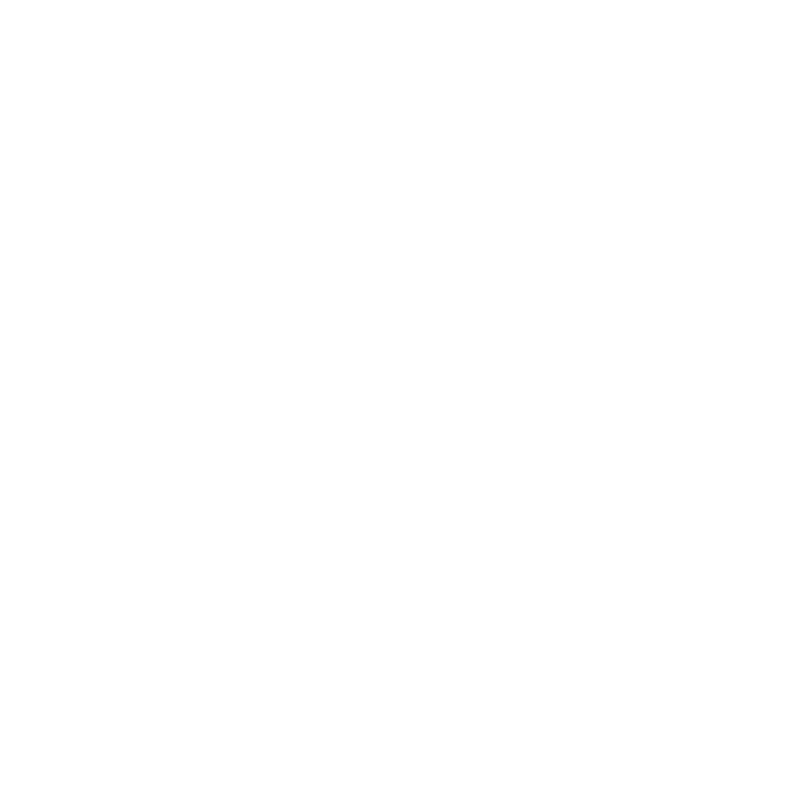

«La ciencia no pertenece a un solo hombre ni a una sola época; pertenece a cualquiera que esté dispuesto a sacrificar su presente por el progreso del mañana.»
Iniciativa estudiantil autogestionada de la Universidad de Santiago de Chile dedicada al aprendizaje, la divulgacion y el prototipado de iniciativas de caracter aeroespacial, permitiendo avanzar en el desarrollo de proyectos de alto impacto practicando con conceptos basicos
Somos estudiantes inquietos con ganas de hacer proyectos prácticos para afinar nuestras habilidades, aprender de lo que la industria ha hecho e integrar tecnologías reales paso a paso.
Desarrollamos prototipos robóticos para aprender de la industria aeroespacial y afinar nuestras habilidades mecatrónicas. Experimentamos con disipación térmica, integración de baterías BMS y sensores LiDAR para navegación y autonomía en tierra.
Utilizamos cohetes hidroneumáticos como plataforma segura de bajo costo para entender en la práctica las leyes de Newton, aerodinámica, centrado de masas y paracaídas. Este aprendizaje experimental nos permite dominar la técnica paso a paso con miras a la cohetería experimental.
Diseñamos e integramos en banco de laboratorio (FlatSat) la arquitectura de satélites 1U: computadores de a bordo (OBC), electrónica de potencia (BMS/EPS) y enlaces de radiofrecuencia (COMMS), probando cada subsistema en tierra para aprender cómo se operan misiones satelitales reales.
Estructura modular dividida en proyectos de desarrollo avanzado (emblemas) y programas formativos diseñados para el onboarding acelerado de nuevos talentos.
Vehículo robótico de exploración terrestre con suspensión Rocker-Bogie a escala real, tracción diferencial independiente y suite para autonomía y sensórica LiDAR.
Vector hidroneumático modular de 3 cámaras acopladas para incremento de apogeo, telemetría a bordo, caracterización de empuje y sistema activo de recuperación.
Desarrollo del bus satelital estándar (10x10x10 cm), integración en banco FlatSat de computadora de a bordo (OBC), transceptores COMMS y enlace con estación terrena.
Desafío de electrónica y telemetría inalámbrica en 4 semanas. Integra sensores, controlador y antena en un cubo cerrado para registrar anomalías ambientales con dron a 30m.
Desafío de paracaídas y descenso pasivo en 4 semanas. Diseña una cápsula en molde de 1L que amortigüe el impacto del módulo sensor OLED lanzado desde un dron.
Vector hidroneumático elemental para aprender la física de propulsión por cantidad de movimiento, centrado de masas (CG vs CP), manufactura de toberas y paracaídas básico.
Conectamos la formulación de hipótesis con la manufactura física y el aprendizaje intergeneracional en proyectos aeroespaciales reales.
Identificamos una oportunidad o problema técnico para desarrollar. Investigamos antecedentes, modelamos piezas en CAD y planificamos cada etapa antes de empezar a fabricar.
Aplicamos nuestros conocimientos y habilidades para construir prototipos funcionales con las herramientas del taller: impresión 3D junto a Full 3D, circuitos electrónicos y ensamble manual.
Medimos y documentamos nuestros avances, aciertos y fallas en banco de pruebas. Compartimos la experiencia y dejamos código y guías abiertas para seguir mejorando entre todos.
La ciencia no pertenece a un solo hombre ni a una sola época; pertenece a cualquiera que esté dispuesto a sacrificar su presente por el progreso del mañana.
Evidencia fotográfica real de jornadas de taller, manufactura aditiva, montaje electromecánico y pruebas de campo en la universidad.
Buscamos estudiantes con ganas de aprender en taller, desarrollar prototipos físicos, software o gestión. No se requiere experiencia previa en todas las áreas: valoramos el compromiso, la honestidad técnica y la curiosidad por aprender.
Si gustan en apoyar los distintos proyectos que estamos realizando pueden ponerse en contacto con nosotros por medio de nuestro correo institucional, cualquier aporte u apoyo tanto economico como en conocimiento u espacio son un paso para que el desarrollo aeroespacial en chile llegue aun mas lejos!
Iniciativa apoyada por entidades clave dentro de la innovacion y desarrollo universitario nacional.